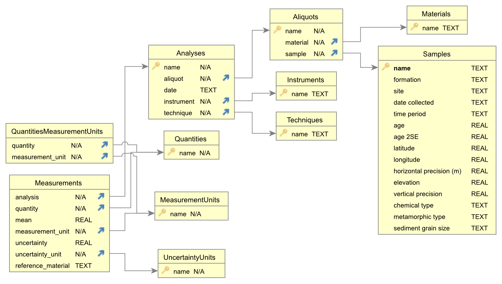

This python module provides a class and methods for adding, updating, and reading data from a SQLite database. It is geared towards a database of geochemical measurements on geologic materials, but it will be as general as possible with respect to admit a variety of data sources.
A minimal SQLite schema for utilizing this package is presented below and available in this repository as schema.sql. SQLiteStudio provides a convenient way to access and modify SQLite databases.
SQLite Schema
The schema presented below is largely inspired by the following references:
Chamberlain, K.J., Lehnert, K.A., McIntosh, I.M., Morgan, D.J., and Wörner, G., 2021, Time to change the data culture in geochemistry: Nature Reviews Earth & Environment, v. 2, p. 737–739, doi:10.1038/s43017-021-00237-w.
Staudigel, H. et al., 2003, Electronic data publication in geochemistry: Geochemistry, Geophysics, Geosystems, v. 4, doi:10.1029/2002GC000314.
Full implementation of the metadata collection described therein is a work-in-progress, but this schema captures the most important elements.

Primary Tables
The geochemical data are assumed to follow a hierarchy that progresses from
sample → aliquot → analysis → measurement. Various metadata are tabulated at each level. This structure is presented here and in the guide with the example of split-stream laser ablation mass spectrometry (LASS-ICPMS) of zircon.
``Samples``
Samples are uniquely identified by names and contain metadata. Minimal metadata for a
sample include:
latitude and longitude
horizontal precision
elevation
vertical precision
In this example, the sample would be the rock from which zircons are separated.
``Aliquots``
Aliquots reflect portions of a sample and have a many-to-one (foreign key) relationship with the Samples table. Minimal metadata for an aliquot include:
In the example, an aliquot would be a single laser ablation spot on an individual zircon. In general, an aliquot is a part of a sample that undergoes analysis.
``Analyses``
Analyses are analytical events that yield measurements. In the case of LASS-ICPMS, a single spot (aliquot) yields analyses on two separate instruments: one that measures trace elements, another that measures U and Pb. Analyses must include:
date
instrument
technique
``Measurements``
Measurements store the geochemical data gathered during analyses. A row exists in the
Measurements table for each element, ratio, or other value measured/derived during an
analysis. For now, measurements are uniquely identifiable soley by the analysis and the
quantity being measured. Measurements must include:
measurement unit
uncertainty unit
reference material
Auxiliary Tables
The following tables provide valid values and combinations of values for several of the metadata fields described above to facilitate data validation and consistency.
Quantities
This table lists valid quantities that can be included in Measurements, such as elemental concentrations, ratios, and error correlations.
MeasurementUnits
This table specifies valid units for Measurements, such as ppm, wt pct, etc.
QuantitiesMeasurementUnits
This table encodes a many-to-many relationship between Quantities and
MeasurementUnits, thereby specifying the valid combinations of the two values. For example, ratios cannot be measured in ppm, and so the only valid measurement_unit for the quantity U/Th would be a ratio.
Instruments
This table records the instruments that yield measurements during analyses. Every analysis must have an instrument.
Techniques
Valid analytical techniques are tabulated here. The same instrument can be used in different ways; for example ICPMS measurements can be done on laser ablation aerosols or solutions. This table records these methodological distinctions.
Materials
Rock samples can yield various materials. An aliquot is a particular material, for example a zircon, and this table contains all the valid materials that aliquots can be.
{kind=link}